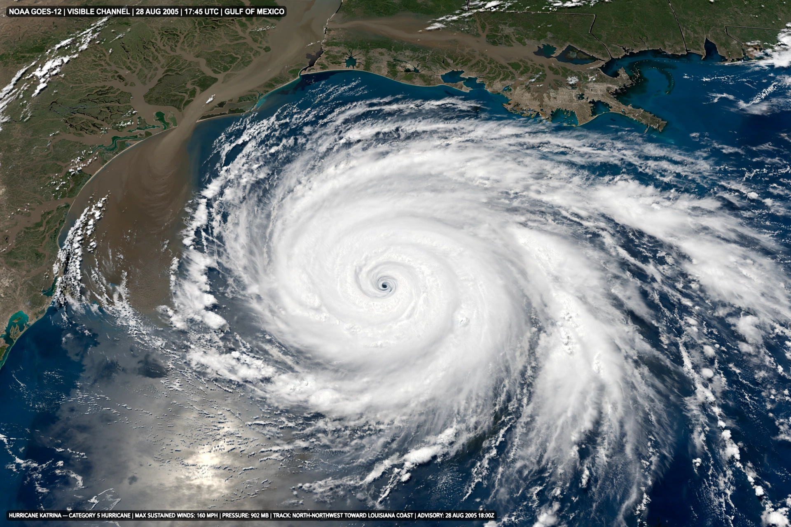

Hurricane Katrina was a devastating Category 5 Atlantic hurricane that caused widespread destruction along the Gulf Coast of the United States in late August 2005. It is tied as the costliest tropical cyclone on record, causing an estimated $125 billion in damage, and was responsible for roughly 1,400 deaths. The storm's storm surge and the failure of New Orleans's levee system flooded most of the city.
| Hurricane Katrina | |
|---|---|
| Formed | August 23, 2005 |
| Dissipated | August 31, 2005 |
| Highest winds | 175 mph (280 km/h), 1-minute sustained |
| Lowest pressure | 902 mbar (hPa) |
| Fatalities | ~1,392 |
| Damage | $125 billion (2005 USD) |
| Areas affected | Bahamas, Florida, Louisiana, Mississippi, Alabama |

Katrina formed over the Bahamas on August 23, 2005, crossed southern Florida as a Category 1 hurricane, then intensified rapidly over the warm Gulf of Mexico, reaching Category 5 with winds of 175 mph. It weakened slightly before making landfall near Buras, Louisiana, on August 29 as a Category 3, followed by a second landfall near the Louisiana–Mississippi border.
A storm surge of up to 27.8 feet (8.5 m) devastated the Mississippi coast, destroying much of Gulfport and Biloxi. In New Orleans, storm surge funnelled into canals caused multiple breaches in the federal levee system; around 80 percent of the city flooded, in places to a depth of 15 feet. More than a million people were displaced across the Gulf region.
The governmental response at local, state, and federal levels was widely criticised as slow and disorganised. Conditions at the Louisiana Superdome and the Ernest N. Morial Convention Center, where thousands sheltered without adequate supplies, became symbols of the failure. The director of FEMA resigned, and the disaster prompted major reforms in U.S. emergency management.
New Orleans's population fell by more than half in the year after the storm and recovered only gradually. The Army Corps of Engineers rebuilt the levee system at a cost of about $14.5 billion. Katrina remains a landmark case in discussions of disaster preparedness, infrastructure resilience, race, and poverty in the United States.